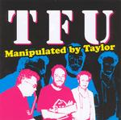

Home Artist links Label link

Taylors Free Universe - Manipulated By Taylor
| Artist: | Taylors Free Universe |
| Title: | Manipulated By Taylor |
| Label: | Marvel of Beauty Records MOBCD016 |
| Length(s): | 51 minutes |
| Year(s) of release: | 2006 |
| Month of review: | [12/2006] |
Line up
Robin Taylor - guitars, keyboards, loops
Pierre Tassone - grand piano, processed violin
Karsten Vogel - saxophones
Lars Juul - drums, electronics
Klavs Hovman - acoustic bass, loops
Tracks
| 1) | Introducing Mr. Gregory | 4.45
|
| 2) | Music Quiz | 6.20
|
| 4) | Evil Force | 3.22
|
| 6) | Forum | 1.51
|
| 8) | East Of Sweden | 3.19
|
| 9) | Manestreem Bob | 5.41
|
| 10) | Iron Sausage End | 7.06
|
Summary
The music
TFU (Taylor's Free Universe) is yet another name for a Robin Taylor led jazz improvisation outfit. This one includes sax player Karsten Vogel, thus ensuring some minutes of auditive sax dead throes. Luckily, though, those are limited to Evil Force and Manestreem Bob, leaving room for the majority of the tracks on this album to be of the brooding, atmospheric type that Taylor so often makes when Vogel is not around. That doesn't necessarily mean that Vogel is shut up for those cuts. It just means he is tomed in, as can be heard in Collective Acid Dive, to name an example. That doesn't, however, mean that this album is pretty much a quiet affair. Not just Vogel's Evil Force roars, Taylor's guitar has its way too at moments, such as Energizing, as do Tassone's piano and Juul's drums. So the bass player -as always- is pretty much the most quiet guy.
The material on this disc was recorded September 15th 2005 and "selected, mixed, edited and manipulated by Robin Taylor". Whereas that might explain the album's title, it does leave me wondering in what way the music on it was manipulated. On the other hand, if the end result works for ya, how important can that be? As long as no animals were harmed during the process, of course.
Conclusion
I don't like shrill sax and there hardly is any on this disc, so that's good. Vogel's contained performance on this disc makes his presence an asset, whereas at other Taylor moments I might be tempted to think otherwise. The aforementioned laidback yet brooding, atmospheric style of this disc makes it into one of Taylor's better ones. Good stuff.
© Roberto Lambooy